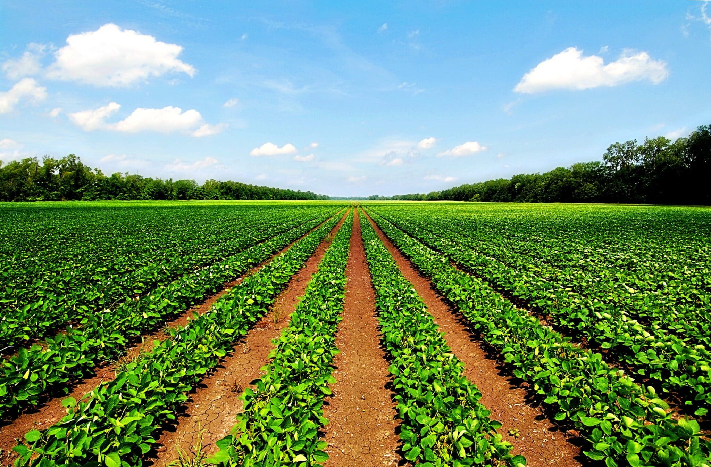

Agriculture


The Department of Agriculture in India plays a vital role in ensuring the growth and development of the country's agricultural sector. It is responsible for formulating policies, implementing programs, and providing support to farmers to increase crop production and improve rural livelihoods. The department focuses on modernizing farming techniques, promoting sustainable agriculture, ensuring food security, and supporting research and innovation in the agricultural field. Through various schemes like PM-KISAN, soil health cards, and crop insurance, it aims to empower farmers and boost agricultural productivity. By working closely with state governments and farmers, the Department of Agriculture contributes significantly to the nation's economy and the well-being of millions dependent on farming.
Agriculture is the backbone of India's economy, providing livelihood to a large portion of the population. The government plays a crucial role in supporting this sector through various schemes and funding initiatives. It raises funds and allocates budgets for farmer welfare, crop production, irrigation, and technological advancements. Major schemes like PM-KISAN, Pradhan Mantri Fasal Bima Yojana (PMFBY), and Rashtriya Krishi Vikas Yojana (RKVY) offer direct financial assistance, crop insurance, and infrastructure support. The government also invests in agricultural research, training, and rural development to enhance productivity and ensure food security in the country.